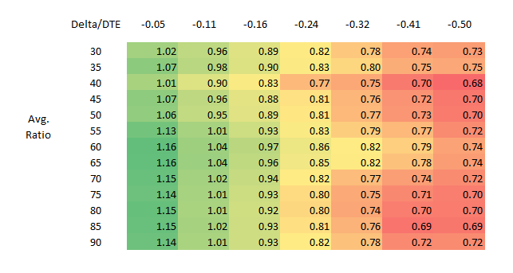
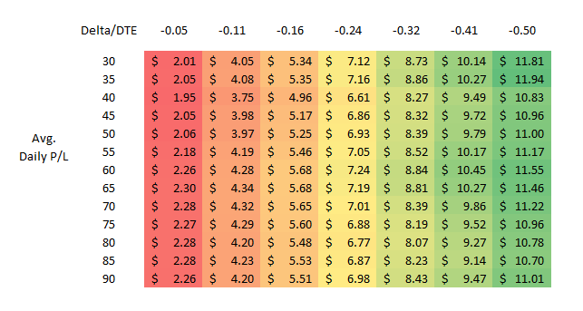
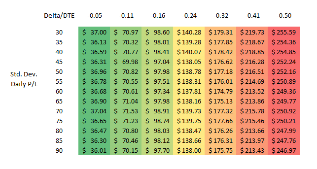

Returns Across Strikes and Expirations
Examining the Impact of Delta and Expiration Selection
Introduction
In this article we explore the historical performance of short puts in one of the most liquid options markets, SPY, through the lens of average daily return and standard deviation of daily returns.
Methodology
Data is aggregated from January 2016 to December 2023. Each day a short option position is opened and returns recorded daily through expiration. Results are calculated for positions held through expiration and managed at various profit targets and loss thresholds. Quotes and greek caluclations are as of 3:45 PM EST each trading day with data provided by CBOE.
Results
Lower delta options had better risk-adjusted returns than higher delta counterparts. Daily P/L was consistent for each delta across days to expiration.
  Considerations
This is not financial advice. Past performance is not an indicator of future results. Transaction assumed to occur at midprice, fees not included. Risk of early exercise disregarded.